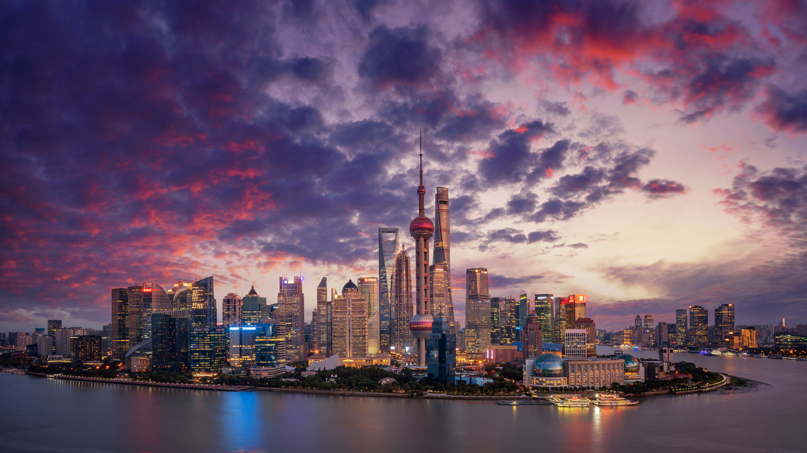

Shanghai is China's most popuated city with a metro population excedding 31 million people. Situated on the Yangtze River estruary, its acts as the primary economic gateway to mainland China.
Why Shanghai Qualifies as a City?
It is a provincial-level direct-administered municipality under the central government and ranks among the top five cities globally for having a huge population (31 million). The city features one of the world's highest concentrations of skyscrapers.
What Advanced Facilities and Infrastructure are Available?
Shanghai is the home to the worlds largest metro, the Shanghai Metro spans the longest total route globally at around 507 miles with its top speed sitting at 75mph. This metro has 508 stations, roughly one a mile it travels. Additionally this astonishing city also features dual airports, it runs two massive international airports:
- Pudong Airport: Which has the worlds fastest airport train (Shanghai Maglev) which connects to Longyang Road Station. This train tops out at a whopping 268 mph.
- Hongqiao Airport: Which was once served exclusively as a military airfield for decades being it was eventually opened to public flights.

Shanghai Fun Facts!
Shanghai is home to the tallest twisting tower wich stands at 632 metres, making it the second tallest building in the world and the
tallest with a 120-degree twist to reduce wind loads.
In the 1920s and 30s Shanghai had a nickname "Paris of the East" due to
its cosmopolitan vibe, high fashion and floursihing art scene.
The InterContinental Shanghai Wonderland (the Deepest Underground
Hotel) is built inside an abandoned quarry with two of its 18 floors completely submerged underwater.